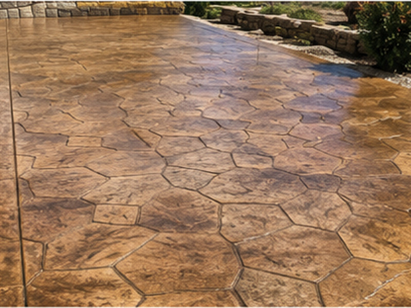

Stamped & decorative
The look of stone, slate or brick at a fraction of the cost — colored, textured and sealed to hold up through high-desert summers and winters.

Stamped concrete gives you the high-end look of natural stone, slate, brick or wood plank without the price tag or the maintenance headaches of laying real units. It's poured as one solid, durable slab and then textured and colored while it's still workable, so the pattern is part of the concrete rather than something sitting on top of it.
For patios, walkways, entries and pool decks around the Tooele Valley, it's a way to add real curb appeal that still stands up to our climate.
Stamped concrete comes in a wide range of patterns — ashlar slate, random stone, cobble, brick, and wood plank among them — and a deep palette of colors layered with base stains and accent releases. The result can read warm and rustic or clean and contemporary depending on the combination. We'll show you options that fit your home and help you avoid choices that look dated quickly.
After the base prep and pour, color is worked into the slab, and the stamps are pressed in while the concrete is at just the right stage — too early or too late and the texture suffers. Joints and borders are placed deliberately so the pattern flows. It's skilled, time-sensitive work, which is exactly why the quality of the crew matters more on decorative jobs than on plain flatwork.
Tooele's strong sun is hard on color, and winter brings moisture and road salt. Sealing is what protects a decorative slab from both — it locks in the color, repels water and salt, and brings out the richness of the finish. Sealer wears over time, so periodic resealing keeps a stamped surface looking new for years.
It shines on patios, front entries and walkways, courtyards and pool decks — anywhere the look is on display. For high-traffic driveways we'll talk through finish and texture choices that balance appearance with grip and durability, so you get the style without a surface that's slick in winter.
Pavers and natural stone look beautiful but cost more, and their joints can settle, shift and grow weeds over time. Stamped concrete delivers a similar look as one continuous slab with no joints to weed and far less to maintain. It generally costs more than plain concrete but less than the real materials it imitates — we'll lay out the trade-offs honestly for your project.
Common questions
It can be smoother than a broom finish, so for areas that get wet — pool decks, entries — we add a non-slip additive to the sealer and choose textures with grip. Tell us where it's going and we'll finish it to be safe underfoot in our wet and icy months.
Roughly every couple of years is a good rule of thumb here, though it depends on sun exposure and traffic. Resealing is straightforward, refreshes the color and keeps water and salt out. We'll explain the upkeep so there are no surprises.
Quality color hardeners and stains are made to resist UV, and a good sealer protects them further. Some mellowing over many years is normal with any colored surface, but proper sealing keeps fading slow and the finish looking rich far longer.
Usually, yes. You're paying for one poured slab and the decorative work rather than the cost of individual stone or paver units and the labor to lay them. It costs more than plain concrete but typically lands below natural stone, with less long-term maintenance.
In many cases a sound existing slab can be resurfaced with a stamped overlay to change its look without a full tear-out. The slab has to be in good structural shape first — if it's cracked or heaved, we'll tell you whether an overlay makes sense or whether replacement is the smarter move.
Related work
The most popular home for a decorative finish.
Entries and paths that pair well with stamped work.
Is your slab sound enough for an overlay? Find out.
Free, no pressure
Call or text for the fastest answer — most estimates are scheduled within a day.
(385) 469-5163